How many guest tickets can I buy?
On Launch Night (in the Bar) and for the first 72 hours that tickets are on sale online, Jesuans will be able to buy their own ticket and two guest tickets. From 13:00 on 22nd February, the guest limit will be extended to a total of four guest tickets. Tickets then go on sale to the rest of the university on the 26th February 1pm.
Please note: You will need the email addresses of guests that you wish to buy tickets for.
I can't make the ball anymore - what should I do?
The Jesus May Ball doesn't offer refunds - however, it is possible to transfer the ticket into another name, although there is a fee for this (some of this is donated to charity!). We may also have a waitlist of people who are looking to buy a ticket from someone, please contact us at ticketing@jesusmayball.com.
We strongly discourage guests from selling tickets for a profit, and would like to urge those who are looking for a ticket to apply through the waitlist first to avoid high markups.
I'm on the waiting list… now what?
If any spare tickets become available (e.g. from people not paying for their tickets), we will contact people on the waiting list in the order they went on. You'll stay on the waiting list until a few weeks before the ball, to give you the best chance of getting a ticket.
Can I change the name on my ticket?
Name changes on tickets can be done
here, for a fee of £40, however this fee will increase to £50 after the 22nd April. Changes will be made to the tickets after payment confirmation. The deadline for all name change requests is the 6th June.
Is your question not answered?
Click
here for a full list of FAQs, or email us at ticketing@jesusmayball.com
We provide advice and support to empower anyone experiencing a mental health problem.
We campaign to improve services, raise awareness and promote understanding. Because of Mind,
millions
more people have access to advice and support thanks to our information and services nationally
and
locally, in England and Wales.
We’re building on change, but we know there is much more to do.
At Beam, we crowdfund new career opportunities for homeless men and women. We provide them with
a
support network, from our support specialists to the kind strangers who fund their campaigns.
We use technology to find scalable solutions to the toughest social problems - starting with
homelessness.
CAMFED envisions a world in which every child is educated, protected, respected and valued, and
grows up to turn the tide of poverty.
As the most effective strategy to tackle poverty and inequality, CAMFED multiplies educational
opportunities for girls and empowers young women to become leaders of change. Our focus is on
girls
and young women in rural areas of sub-Saharan Africa.
This is where girls face acute disadvantage and where their empowerment will have a
transformative
impact.

RAG is the biggest student-led charitable organisation in the University of Cambridge.
They offer members the chance to participate in a range of college and uni-wde events to support
a number of local, national and international charities. This year, RAG will be supporting 10
charities on behalf of Jesus College May Ball.